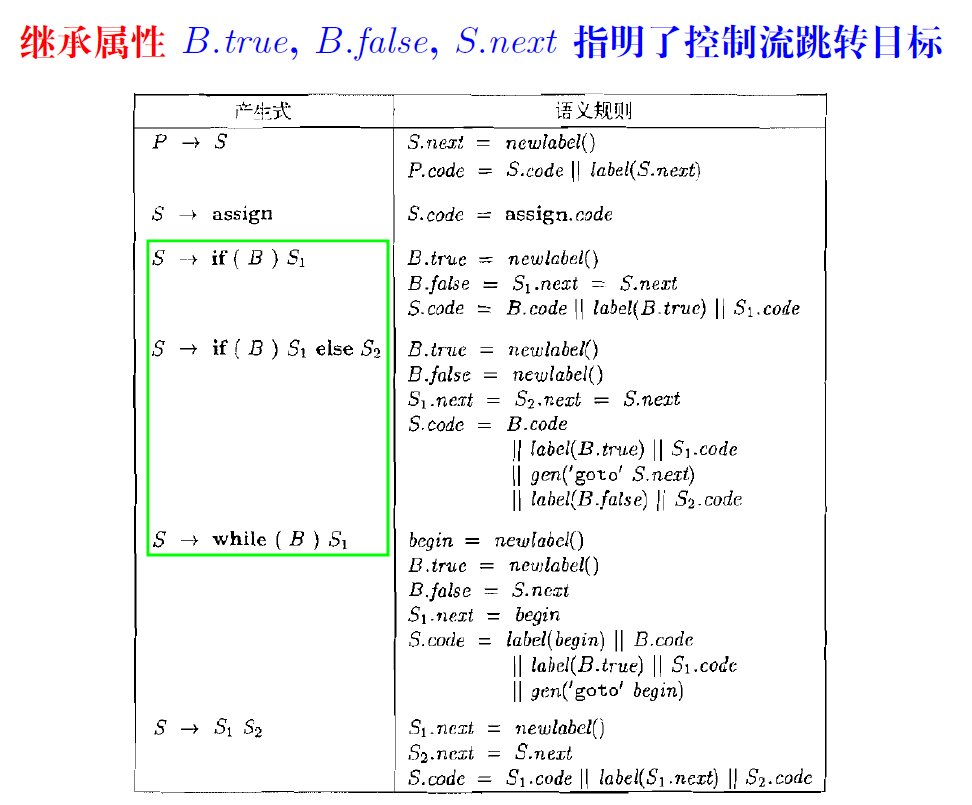

编译原理
编译原理
Lexer
- Thompson算法
- 子集构造法
- 编译原理: Subset Construction 子集构造法(幂集构造)(NFA转DFA)_编译原理nfa转dfa-CSDN博客


- 解释：先把初始状态和它通过无条件转移能到达的并为一个状态，然后一步步根据不同输入扩展，知道所有状态在所有输入情况下的目标状态都已定义
- DFA最小化算法

- 解释：先把非接受状态和接受状态分成两类，再在每个等价类内部判断每个成员是否会转移到其他等价类，如果是就把它拎出去单独成一个等价类，直到最后只剩最小闭包。
- 合并等价状态时注意只把它们之间的状态转移去掉，但它们自己到自己的边和与外界相连的边要保留


Parser
- 上下文无关文法


- 在最左推导中，每一步总是替换字符串中最左边的非终结符。具体过程如下（最右推导相反）：
- 从起始符号（开始符号）S开始。
- 在每一步推导中，选择当前字符串中最左边的非终结符，并使用某个产生式规则进行替换。
- 重复步骤2，直到得到仅由终结符组成的字符串。

- 文法G 的语言L(G) 是它能推导出的所有句子构成的集合
LL(1)
FIRST与FOLLOW求解
First(α) 是可从α 推导得到的句型的首终结符号的集合，Follow(A) 是可能在某些句型中紧跟在A 右边的终结符的集合
注意，FIRST和FOLLOW都是针对单个非终结符的，预测分析表的行也是单个非终结符，也就是说不存在类似FIRST(ABC)


对文法G的每个产生式A->α 执行如下步骤：
（1）对每个a∈First(α)，把 A->α 加入M[A,a]
（2）若 ε∈First(α)，则对任何b∈Follow(A) ,把 A-> ε加至M[A,b]中
判断某文法是否为LL(1)
- 编译原理——判断是否为LL（1）文法及构造分析表_请写出ll(1)文法应满足的条件。-CSDN博客

- 另一种方式：检查预测分析表是否无冲突，即检查是否有一个单元格中是否有有超过一个表达式，如果有则不是LL(1)
LR(0)
- 编译原理学习笔记（七）~LR(0)分析-CSDN博客
- 画自动机
- 先对文法增广
- 通过初始状态得到I0
- 一步步对每个点不在最右边的情况生成新的状态，计算项集时注意每一条点不在最右边的要把点后非终结符的规则加进来
- 直到最后不再有新的状态出现
- 画分析表
- 根据自动机填表
- 非终结符部分有三种（移入s，规约r，接受acc），终结符部分直接写数字表示状态跳转
- 注意需要规约的状态无论看到什么输入都进行规约
- 关注栈的状态
- 移入动作代表入栈
- 入栈的同时也带来新的状态
- 出栈时状态回到该句柄入栈前的状态
SLR(1)
- 编译原理学习笔记（九）~SLR分析-CSDN博客
- 如果文法G 的SLR(1) 分析表是无冲突的, 则G 是SLR(1) 文法。

- 新的自动机：在规约项后加上FOLLOW集中的元素，表示只有下一个输入符号为这些之一才规约，否则移入

LALR(1)
- 编译原理学习笔记（十一）~LALR分析法-CSDN博客
- LALR(1) : 合并具有相同核心LR(0)项的状态(忽略不同的向前看符号)
ANTLR优先级上升算法
- 优先级确定：根据原文法从下往上每条规则优先级从1递增
- 非左递归规则改写：
- 放在开头，用( )包裹，两条规则中间用|隔开
- 若包含递归规则，分为含运算符和不含运算符两种
- 不含运算符（如
( expr )）则传参数0 - 若含右结合单操作数运算符（如
'-' expr），则传参等于此条规则优先级
- 左递归规则改写：
- 用( )包裹，最后有*
- 每条规则前有优先级判断（如
(5 >= $_P)?） - 非终结符调用递归规则，若运算符为左结合（包括单操作数，如阶乘 !）则传参为该规则优先级+1，若运算符为右结合（如指数运算2^5，规则前要加一条
<assoc = right>）则传参为该规则优先级 - 优先级升高原因：使优先级等于或高于当前节点的能在当前节点下展开，小于的回到上一级展开
- 示例


语法制导翻译SDT
- 综合属性
- 在LL 语法分析器中, 递归下降函数A 返回时,计算相应节点A 的综合属性值
- 综合属性用returns定义！
- 继承属性


- 继承属性用参数定义！
- L属性
- 直观来说就是继承属性只能从上往下、从左往右传递

- 例子


中间代码翻译
- 表达式
- 数组引用
- 控制流语句翻译中的地址回填技术
- 祖先节点通过综合属性收集子节点中具有相同目标的跳转指令
- 综合属性B.truelist 保存需要跳转到B.true 标签的指令
- 综合属性B.falselist 保存需要跳转到B.false 标签的指令
- 综合属性S/L.nextlist 保存需要跳转到S/L.next 标签的指令

- 控制流语句
- 简单模式：只使用综合属性，为布尔表达式B 计算逻辑值(假设保存在临时变量t1 中)，if、while 等语句根据 B 的结果改变控制流
- 困难模式：父节点为子节点准备跳转指令的目标标签，子节点通过继承属性确定跳转目标
- 


RISC-V指令集
- 寄存器
- ra：返回地址
- t0 - t6：临时寄存器
- pc：程序计数器
- 指令
1 | |
寄存器分配算法

- 线性扫描分配算法
- 三大关键操作: 占用、释放、溢出

- 发生溢出时，比较右端点，把最远的放入内存，腾出来的寄存器给新变量

- 解决方案一：生成代码时, 使用临时物理寄存器实现临时变量
- 解决方案二: 预留若干物理寄存器, 作为溢出处理时所需的临时寄存器
- 分支指令问题


编译原理
https://frosty-xue.github.io/2025/05/08/编译原理/